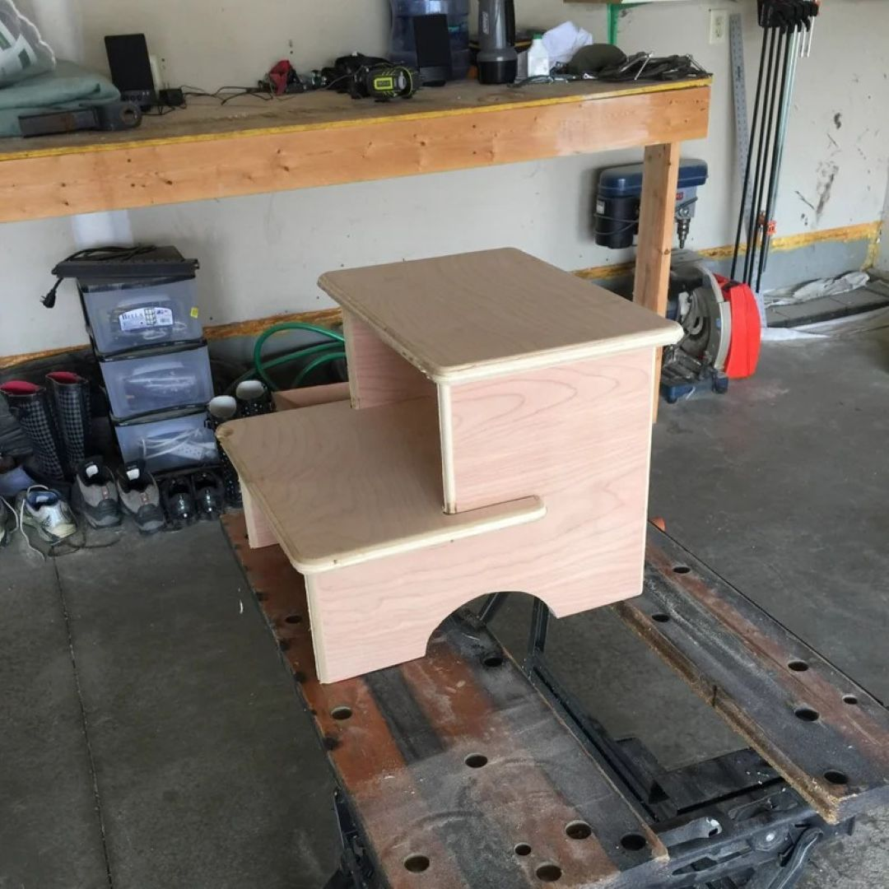

Built with grit. Backed by heart. Delivered with precision.
Some businesses start in the boardroom. TNF Wood Work started in a garage, with a toddler who couldn't reach the sink and a wife who asked for a step stool.
During my final years of service in the Army, I was still figuring out life after the uniform. My kids were little, my hands needed something to do, and I was craving a sense of purpose outside the mission. So I grabbed some plywood and knocked together a basic step stool. It wasn't perfect — but it was real. And it felt good.
That was the spark.
Before long, I found myself back in the garage, building a toy box. Then a bookcase. A plaque. I wasn't just making sawdust — I was learning. Learning about different types of wood, how to join them cleanly, how to fix mistakes (there were plenty), and how to build things that not only worked, but looked damn good doing it.
The more I built, the more I wanted to build. What started as a hobby quickly grew into something more — a calling, even. A way to serve again, just in a different uniform. And so, TNF Wood Work was born.
What I Build
I've had the honor of crafting everything from practical home pieces to personalized gifts and custom statement pieces. Every project, no matter the size, gets the same level of care and attention.
- Custom signs and plaques
- Engraved gifts
- Furniture and home fixtures
- One-off utility builds
- Memorial and service recognition pieces
- Personalized commissions
Some are simple. Some are fine woodworking challenges. All are built by hand, by me, in Chapin, South Carolina — with deep respect for the material and the people it's made for.
Let’s Build Something That Lasts
Whether you’re ready to order or just tossing around an idea, I’m always down to talk shop. Hit that contact button or drop me an email—let’s bring your vision to life.
Reach Out »